Introduction to Udacity Self-Driving Car Simulator
How To Set Up The Simulator

Udacity recently made its self-driving car simulator source code available on GitHub, which they originally built to teach their Self-Driving Car Engineer Nanodegree students.
Now, anybody can use the valuable tool to train their machine learning models to clone driving behavior.
In this article, I’ll explain:
- What you can do with it
- How to set up the simulator
- Deep Learning driver example
1 What You Can Do with it?
You can manually drive a car to generate training data, or your machine learning model can autonomously drive for testing.
On the main screen of the simulator, you can choose a scene and a mode.
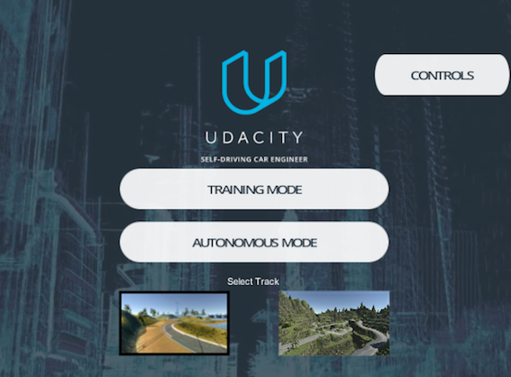
First, you choose a scene by clicking one of the scene pictures. The above is selecting the lakeside scene (the left).
Next, choose the Training Mode or Autonomous Mode. When you click one of the mode buttons, a car appears at the start position.
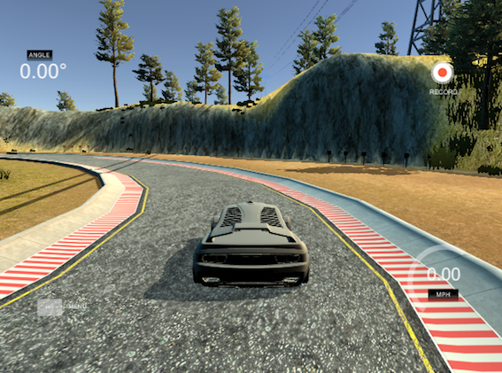
1.1 Training Mode
In the training mode, you drive the car manually to record the driving behavior. You can use the recorded images to train your machine-learning model.
To drive the car, use the following keys:
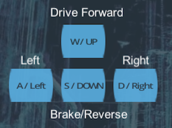
If you like using a mouse to direct the car, you can do so by dragging:
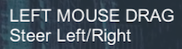
Press R on your keyboard to start recording your driving behavior.
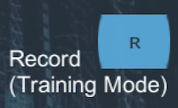
You can press R again to stop the recording.
Finally, use ESC to exit the training mode.
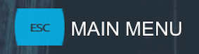
You can see the driving instructions any time by clicking the CONTROLS button in the top right of the main screen.
1.2 Autonomous Mode
In the autonomous mode, you are testing your machine learning model to see how well your model can drive the car without dropping off the road or falling into the lake.
Although the driving in the above video may not be the best possible, it is pretty rewarding to watch a trained model autonomously driving the car without going off the road.
Technically, the simulator acts as a server from which your program can connect and receive a stream of image frames.
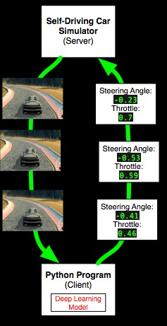
For example, your Python program can use a machine learning model to process the road images, predict the best driving instructions, and send them back to the server.
Each driving instruction contains a steering angle and an acceleration throttle, which changes the car’s direction and speed (via acceleration). As this happens, your program will receive new image frames in real-time.
2 How to Set Up the Simulator
You’ll need the following:
- Unity Game Engine
- Git LFS
- Udacity Self-Driving Car Simulator Github
2.1 Unity
They use Unity (a game development environment) to build the Udacity self-driving car simulator.
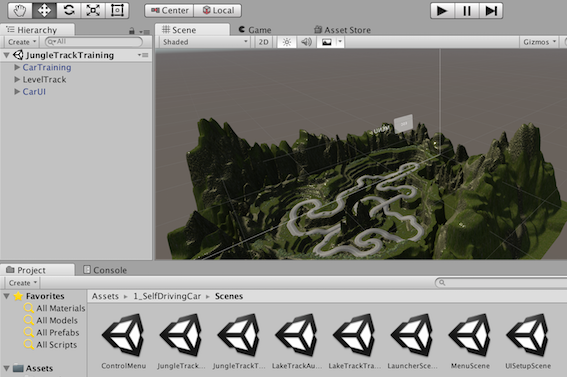
You can install it as follows:
- Go to https://unity3d.com and download the Unity installer. Choose the right version for your license requirement. The Personal version works fine with the Udacity simulator.
- Start the installer. It will download the necessary components and begin the installation process.
- Follow the instruction to install Unity on your computer.
2.2 Git LFS
The Udacity self-driving car simulator uses Git LFS to manage large files.
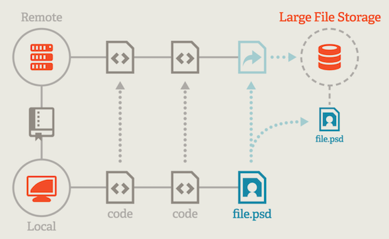
The above image is from https://git-lfs.github.com. Below is a quote from the site:
Git Large File Storage (LFS) replaces large files such as audio samples, videos, datasets, and graphics with text pointers inside Git, while storing the file contents on a remote server like GitHub.com or GitHub Enterprise.
For macOS, you can use brew to install it:
brew install git-lfsOnce installed, you need to enable it for Git on your machine.
git lfs installFor Windows and Linux, please see https://git-lfs.github.com for details.
Note: I’m assuming you already have the git command in your environment. If not, please follow the instruction to install git before installing git-lft.
2.3 Udacity Self-Driving Car Simulator Github
This GitHub project contains a Unity project for building the simulator.
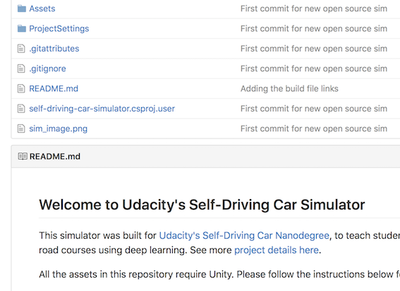
- Open a terminal on your computer and clone the self-driving car GitHub project:
git clone https://github.com/udacity/self-driving-car-sim.gitThat’s it for preparation.
3 Quick Start
Let’s build the self-driving car simulator.
In Unity,
- Go to File > Open Project to open the self-driving-car-sim folder
- Go to File > Build Settings to open the build setting window
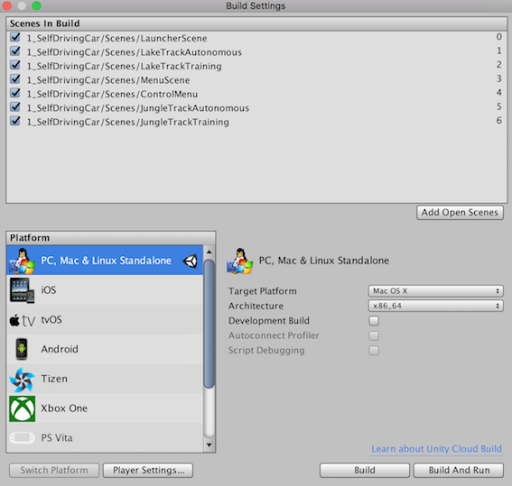
- Choose the right platform for your computer and then press the Build button
- Specify the location and name of the generated executable file
- Double-click the executable file to start the simulator.
4 Modifying the Scenes in the Simulator
If you want to modify the scenes in the simulator, you’ll need to dive deep into the Unity projects and rebuild the project to generate a new executable file.
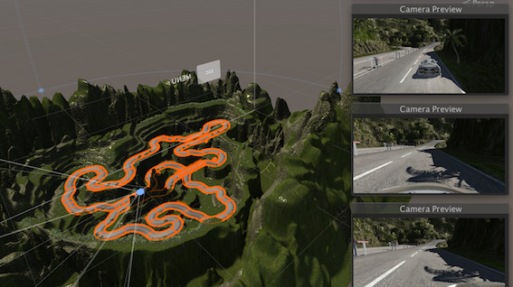
For this, I suggest you first read the README.md in the Self-Driving Car Simulator GitHub to learn how to navigate the Unity project.
For more details on Unity, please visit https://unity3d.com.
5 Deep Learning Driver Example
You can try a predefined model to see how a deep learning model drives autonomously.
- Open a terminal, then execute the following command to clone the project to your computer.
git clone https://github.com/naokishibuya/car-behavioral-cloning.git- Create a Python environment used by the model using
conda:
cd car-behavioral-cloning
conda env create -f environments.xml- Activate the Python environment used by the model
source activate car-behavioral-cloning- Double-click your simulator executable to show the start-up screen
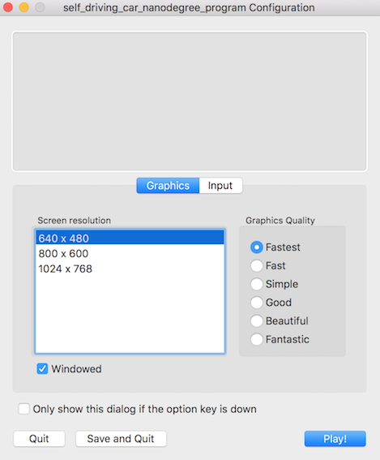
- Choose 640 x 480 screen resolution and the Fastest graphics quality (making sure it works with the lowest requirements)
- Press the Play! button

- Choose the lakeside track (on the left)
- Click the Autonomous Mode button
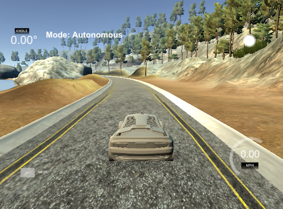
- Go back to the terminal and run the pre-trained model by the following command
python drive.py model.h5You can choose a different image quality in the simulator startup screen to see how it affects the car’s driving.
The README.md has more details about the Deep Learning model. You can modify the model parameters and train them to generate different model files using the saved train data from the Training Mode.
Enjoy!